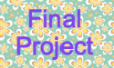

.png)


|
|
 |
|---|
My final Project is a based on the famous television game show: Deal or No Deal.
In order to try this program, you must first select click on the final project screenshot. This will link you to a Khan Academy page with the Deal or no Deal game. To beginning the game, select the "Start Game" button. This will link you to the actually game, where you will have 23 button cases are displayed. When you click on one of these cases, the case will reveal a ramdomized amount of cash. You must click as many cases as possible until the scene changes into the bank offere scene. In this scene, the bank will offer a specific cash value and you will have the choice of either selecting the "Deal" button or "No Deal" button. If you select the deal, you will be taken to the win scene. This will reveal the amount of cash recieved based on the bank's offer. If you select the "No Deal" button, the program will jump back to the game scene and the game continues. The game will continue to play until the "Deal" button is selected or there are only two cases left. If there are only two remaining cases, the scene will shift to a "choose a case scene" and you must click on the "choose a case" button. If you select a case, the scene will immediately change to the win scene. The cash value you recieve with be the cash in the last case you chose.